Portofolio Proyek Kaca & Aluminium
Sahabat Kaca Aluminium Karawang
Rangkaian portofolio pengerjaan kusen SNI, partisi kantor kawasan industri, pintu kaca tempered, kanopi kaca, dan fasad komersial di Karawang Barat, Karawang Timur, Cikarang, dan Bekasi.
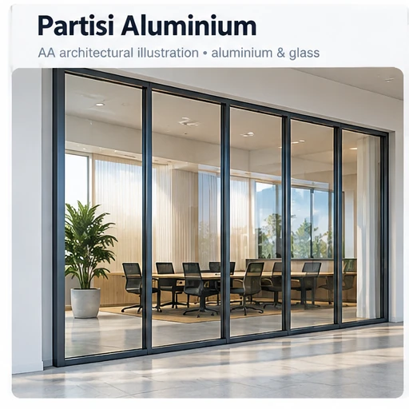
Partisi Kaca Aluminium Ruang Rapat & Kantor Industri
Pemasangan partisi kaca modular ruang meeting eksekutif pada fasilitas manufaktur kawasan industri KIIC Karawang Barat. Memberikan kekedapan suara tinggi agar rapat internal tidak bocor ke area produksi.

Pintu Kaca Tempered Frameless Floor Hinge Toko & Showroom
Pintu kaca tempered frameless untuk outlet komersial ruko Galuh Mas Karawang. Menghadirkan visibilitas display barang dagangan secara maksimal dari luar ruangan tanpa halangan bingkai.

Pintu Sliding Aluminium Kaca Akses Taman & Ruang Keluarga
Pintu sliding kaca connecting room taman belakang pada hunian 2 lantai Grand Taruma. Memungkinkan pencahayaan alami masuk leluasa dan sirkulasi angin segar mengalir ke seluruh lantai satu.
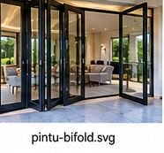
Pintu Lipat (Bifold) Aluminium 4 Daun Teras Belakang
Konsep indoor-outdoor living dengan folding door 4 daun bukaan 100%, sistem rel tanam rata lantai dan kaca tempered 8mm aman untuk keluarga.

Sekat Partisi Kaca Dapur Minimalis Fluted Moru Glass
Sekat pemisah dapur bersih dan ruang makan menggunakan kaca bertekstur garis Moru (fluted glass). Menghalangi percikan minyak memasak dan bau dapur namun tetap meneruskan cahaya alami estetis.

Fasad ACP Seven & Pintu Sensor Gerak Otomatis
Transformasi fasad eksterior showroom komersial dengan penutup dinding ACP merek Seven garansi warna 10 tahun dan pintu sliding otomatis sensor microwave.
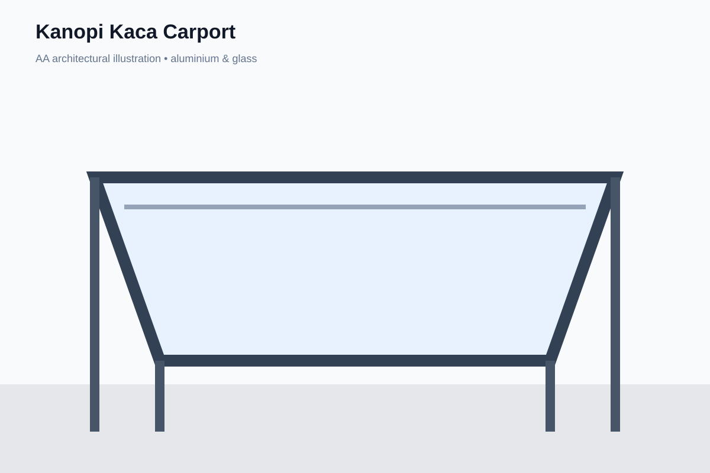
Kanopi Kaca Tempered Laminated Carport Modern
Atap kanopi carport mobil mewah menggunakan kaca tempered 10mm dengan struktur hollow galvanis 100×50 tebal 2mm bebas tiang tengah mengganggu manuver kendaraan.

Jendela Aluminium Jungkit (Casement) Akustik
Instalasi paket jendela casement buka samping dan jungkit awning pada hunian dekat jalan raya Telukjambe. Meredam kebisingan lalu lintas hingga 32 desibel.

Shower Screen Kaca Frameless Kamar Mandi
Penyekat area basah dan kering kamar mandi utama model pintu swing frameless kaca tempered 10mm. Menjaga lantai luar tetap kering dan higienis.

Pintu Kaca Kamar Mandi Motif Sandblast Buram
Pintu swing kamar mandi tahan cipratan air dengan motif sandblast buram gradasi modern. Tidak akan pernah keropos, berkarat, ataupun diserang rayap.
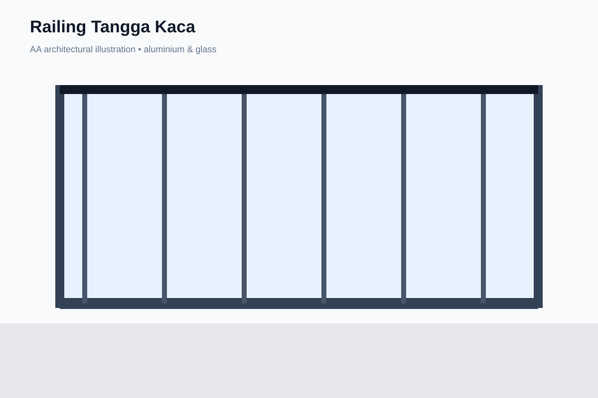
Railing Tangga & Balkon Kaca Tempered Frameless Spigot SUS304
Instalasi railing tangga kaca pada rumah hunian 2 lantai. Memberikan efek melayang yang memukau tanpa kisi-kisi besi penghalang pandangan, sekaligus sangat aman bagi anak kecil.
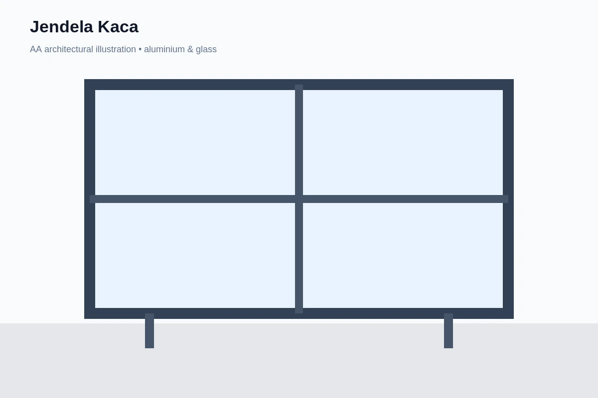
Partisi Kaca Cleanroom Higienis & Pintu Airtight Pabrik
Instalasi partisi kaca ruang laboratorium uji kualitas (QA/QC) dan cleanroom industri komponen otomotif kawasan Suryacipta Karawang.
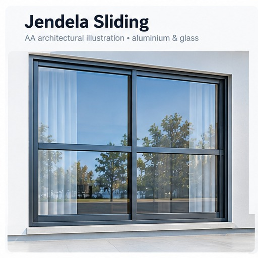
Jendela Sliding (Geser) Aluminium 4 Daun Ruang Tamu
Bukaan jendela lebar 4 daun geser sentral menghadap taman depan. Ruangan menerima sirkulasi udara maksimal dengan view lanskap taman tanpa sekat masif.

Pintu Aluminium Swing Modern Daun Panel Spandrel Full
Pintu akses samping dan area servis rumah memakai panel spandrel aluminium double layer anti dobrakan, privasi 100% dan tahan air hujan.
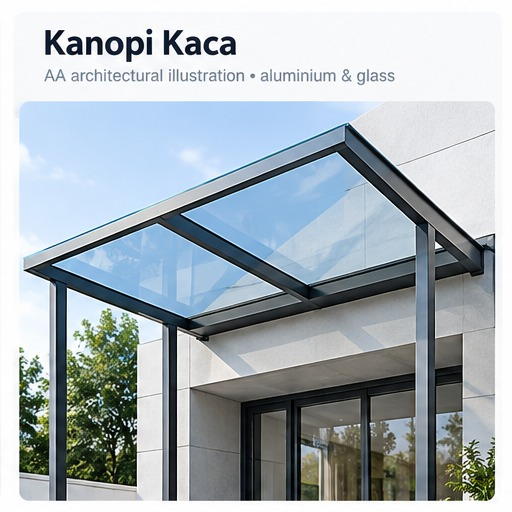
Skylight Atap Kaca Tempered Void Tangga Rumah Tingkat
Atap penerangan alami (skylight) di atas void tangga tengah hunian 3 lantai. Menghemat pemakaian listrik lampu di siang hari secara signifikan.
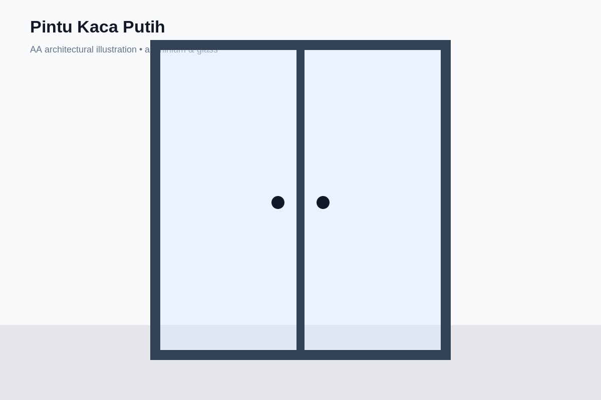
Pintu Kaca Aluminium Frame Putih Gaya Scandinavian
Pintu kaca frame putih dengan kisi ornamen kotak modern memadukan estetika Skandinavia terang dan bersih untuk akses ruang keluarga ke teras samping.

Curtain Wall Kaca Fasad Gedung Ruko & Perkantoran 3 Lantai
Pemasangan dinding tirai kaca (curtain wall stick system) fasad depan ruko 3 lantai. Memberi kesan megah arsitektural modern penunjang citra profesional kantor.
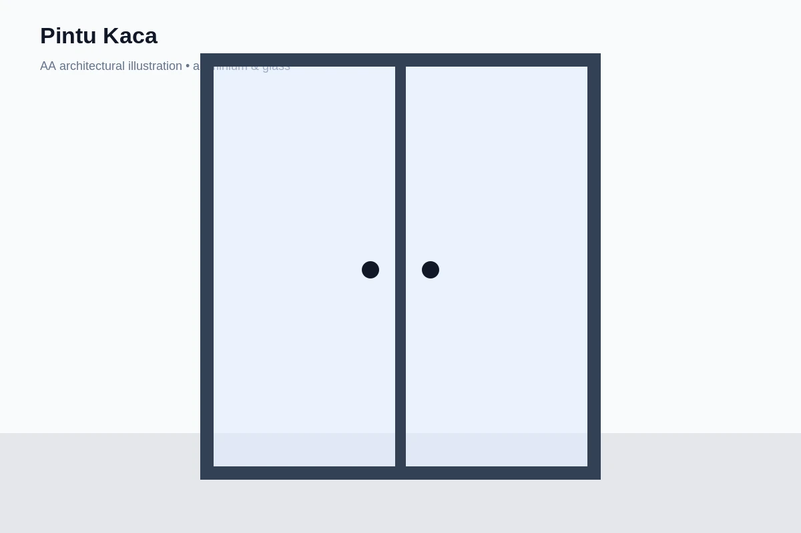
Pintu Kaca Sliding Otomatis Sensor Gerak Minimarket & Apotek
Instalasi pintu geser otomatis kaca tempered tanpa sentuh untuk pintu masuk apotek modern dan minimarket, mendukung kenyamanan pengunjung dan efisiensi AC ruangan.
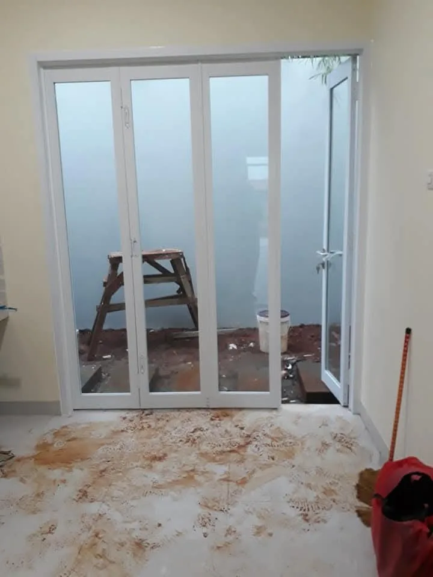
Pintu Lipat (Bifold) Aluminium 6 Daun Ruang Serbaguna & Garasi
Penyekat fleksibel aula serbaguna yang dapat dilipat ke sisi kiri dan kanan, membuka akses lapang tanpa tiang tengah saat ada acara keluarga besar.
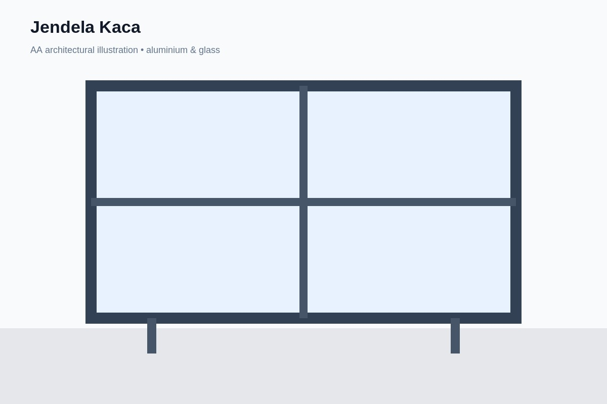
Partisi Kaca Akustik Double Glass & Louver Blinds Ruang Direksi
Ruang kerja direksi pabrik GIIC dengan partisi kaca ganda kedap suara tinggi dan tirai venetian blinds magnetik di dalam rongga kaca.
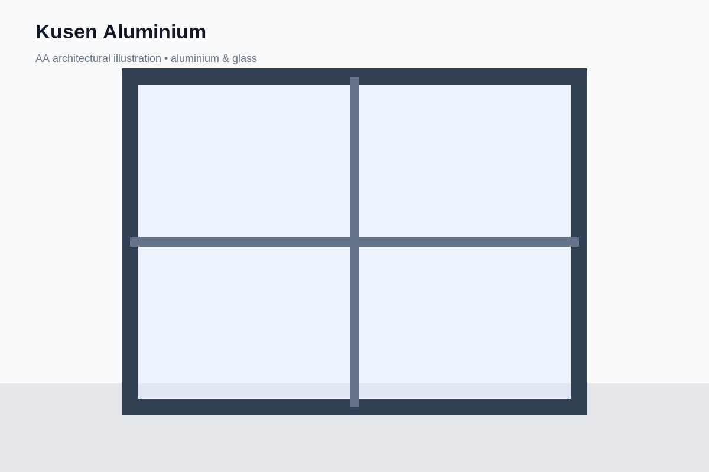
Pintu Utama Pivot Oversized Jumbo Rangka Aluminium Minimalis
Pintu masuk utama rumah mewah dengan sistem engsel putar pivot lantai offset. Daun pintu berukuran besar memberi sambutan megah saat dibuka.
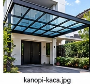
Kanopi Kaca Tempered Laminated Teras Kolam Renang Cantilever
Kanopi kaca bening santai tepi kolam renang dengan sistem gantung kabel sling baja stainless SUS304 (cantilever) tanpa tiang penyangga di pinggir kolam.
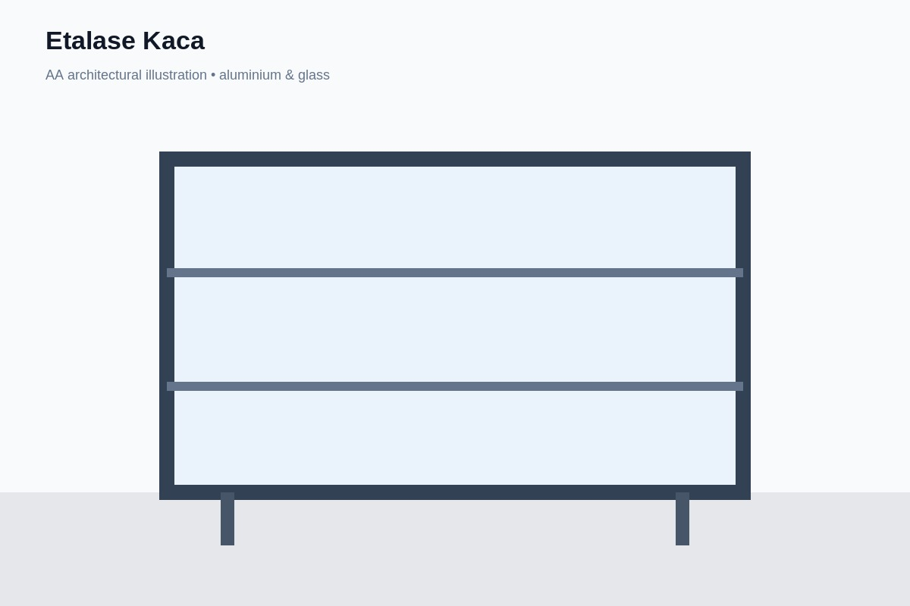
Etalase Kaca Aluminium & Rak Display Toko Perhiasan Emas
Pembuatan counter etalase perhiasan emas full kaca tempered dengan pencahayaan warm white LED strip tersembunyi dan sistem penguncian keamanan ganda.
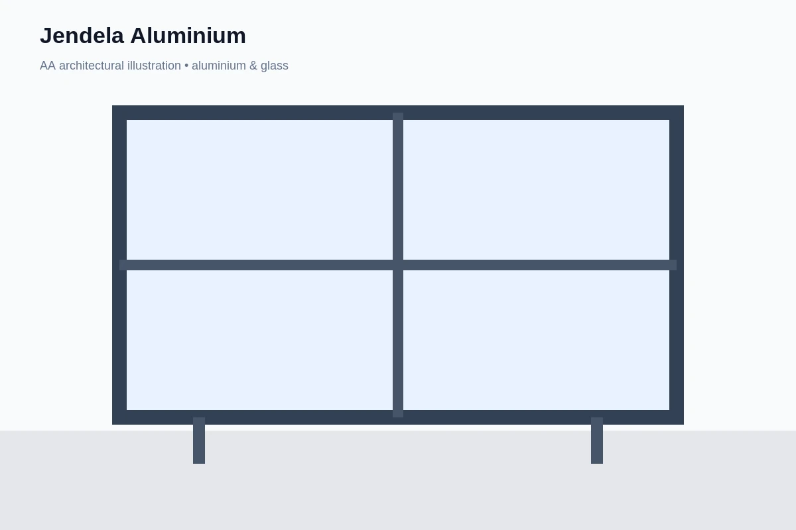
Jendela Pivot Aluminium Vertikal Putar 180° Ruang Tangga
Jendela aksen arsitektural void tangga yang dapat diputar 180 derajat untuk memudahkan pembersihan kaca sisi luar dari dalam rumah.
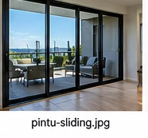
Pintu Sliding Model Barn Door Industrial Kisi Kotak Hitam
Pintu geser gaya industrial modern dengan lis kisi kotak aluminium hitam (french door style) untuk pemisah ruang kerja di rumah tinggal.
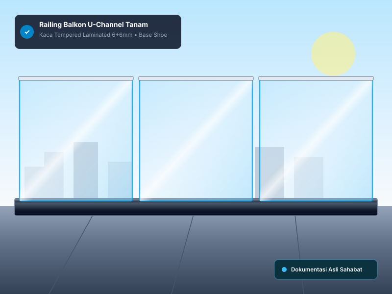
Railing Balkon Kaca Tempered U-Channel Aluminium Tanam (Base Shoe)
Pagar balkon kaca tampilan bersih total tanpa tiang ataupun spigot bawah. Profil U-channel struktural ditanam rata permukaan keramik teras lantai 2.
Punya Rencana Proyek Kaca atau Aluminium?
Tim teknisi kami siap datang langsung ke lokasi proyek Anda di Karawang, Cikarang, dan Bekasi untuk pengukuran presisi, pembawaan sampel bahan, dan perhitungan RAB gratis.
Jadwalkan Survey Lokasi & RAB Gratis →